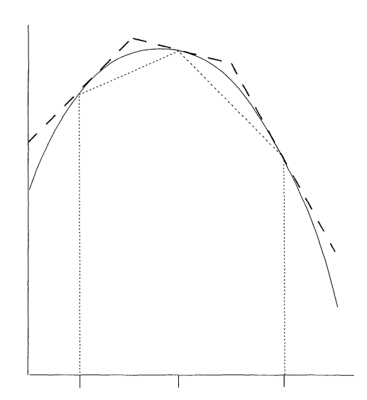

Rejection Sampling
The accept-reject method, also called rejection sampling, is a simple and general technique for generating random variables. It is based on the idea of sampling from a simple distribution and then rejecting the samples that are not in the desired distribution. This method is particularly useful when the desired distribution is difficult to sample from directly, but it is easy to evaluate the density function of the distribution.
Mathematical Foundations
For the accept-reject method, we need to recall the following definitions:
Let \(X\) and \(Y\) be discrete random variables.
The joint distribution of \(X\) and \(Y\) is given by the probability mass function
\[f_{X,Y}(x,y) = \mathbb{P}(X=x, Y=y) \tag{1}\]
The marginal distribution of \(X\) is given by the probability mass function
\[f_X(x) = \mathbb{P}(X=x) = \sum_{y} f_{X,Y}(x,y) \tag{2}\]
The conditional probability of \(X\) given \(Y\) is defined as
\[f_{X|Y}(x|y) = \mathbb{P}(X=x|Y=y) = \frac{f_{X,Y}(x,y)}{f_Y(y)} \tag{3}\]
Theoretical Foundation
The accept-reject method is based on the following fundamental theorem:
Theorem 1 (Marginal of Uniform Distribution) Let \(p(x)\) be a probability distribution. Let \(X, Y\) be two random variables having the joint distribution
\[ f_{X,Y}(x,y) = \begin{cases} 1, & \text{if } 0 \leq y \leq p(x), \\ 0, & \text{otherwise}. \end{cases} \tag{4}\]
Then the marginal distribution of \(X\) is given by \(p(x)\).
Proof. The marginal distribution of \(X\) is given by
\[f_X(x) = \int_{-\infty}^{\infty} f_{X,Y}(x,y) \, dy = \int_{0}^{p(x)} 1 \, dy = p(x)\]
\(\blacksquare\)
Thus, in order to sample from a distribution \(p(x)\), we want to devise a method to sample from the joint distribution given by Equation 4. The accept-reject method provides exactly such a technique.
Accept-Reject Method: Basic Algorithm
Suppose \(p(x)\) is a probability distribution from which we want to sample. Suppose further that \(p(x)\) is supported over the interval \([a, b]\) and is bounded by \(M\), i.e., \(p(x) \leq M\) for all \(x \in [a, b]\).
Worked Example
Example 1 (Example: Triangular Distribution) Consider the triangular distribution
\[ p(x) = \begin{cases} 4x, & \text{if } 0 \leq x \leq 0.5, \\ 4(1-x), & \text{if } 0.5 \leq x \leq 1 \\ 0, & \text{otherwise}. \end{cases} \tag{5}\]
Analysis:
- Support: \([a,b] = [0, 1]\).
- Maximum value: \(M = \max_{x \in [0,1]} p(x) = p(0.5) = 2\).
- Acceptance probability: \(\frac{1}{M(b-a)} = \frac{1}{2 \cdot 1} = 0.5\).
Algorithm application:
- Sample \(x \sim \text{Uniform}(0, 1)\).
- Sample \(y \sim \text{Uniform}(0, 2)\).
- If \(y \leq p(x)\), accept \(x\); otherwise reject and repeat.
On average, we expect to reject half of our proposals.
Efficiency
Note that unlike the methods we have seen so far, the accept-reject method is probabilistic. The method generates uniformly distributed samples in the rectangle of area \(M(b-a)\), where \(M\) is the bound on \(p(x)\) and \([a, b]\) is the support of \(p(x)\). But because \(p(x)\) is a probability distribution, the area under the curve is 1. Thus the efficiency of the accept-reject method is given by
\[\text{Efficiency} = \frac{1}{M(b-a)} \tag{6}\]
Accept-Reject Method v2
A better version of the accept-reject method is obtained by replacing the enveloping rectangle with an enveloping curve. The closer the enveloping curve is to the distribution, the higher the efficiency of the method.
Definition 1 (Definition: Majorizing Function) Let \(p(x)\) be a probability distribution. A function \(g(x)\) is said to majorize \(p(x)\) if \(g(x) \geq p(x)\) for all \(x\) in the support of \(p(x)\).
In the accept-reject jargon, we call \(p(x)\) the target distribution and \(g(x)\) the proposal distribution. Note that a probability distribution can never majorize another probability distribution as the area under the curve is 1. But we can scale the proposal distribution by a constant \(M\) such that \(Mg(x)\) majorizes \(p(x)\).
Improved Algorithm
Worked Example
Example 2 (Example: Beta Proposal for Triangular Distribution) Consider the triangular distribution given by Equation 5. We saw that we can use the enveloping rectangle with \(M = 2\) to sample from this distribution. The Beta distribution \(\text{Beta}(2, 2)\) provides a better majorizing function with constant \(M = 4/3\).
The \(\text{Beta}(2, 2)\) distribution has density: \[g(x) = 6x(1-x), \quad x \in [0, 1] \tag{7}\]
Efficiency comparison:
- Rectangle method: Efficiency = \(\frac{1}{2 \cdot 1} = 50\%\)
- Beta proposal: Efficiency = \(\frac{1}{M} = \frac{1}{4/3} = 75\%\)
The Beta proposal method is significantly more efficient!
In order to run the accept-reject method, we need to sample uniformly from the region between the graph of \(Mg(x)\) and the \(x\)-axis. This can be done using the following theorem:
Theorem 2 (Uniform Sampling Under Majorizing Function) Let \(g(x)\) be a probability distribution and let \(M\) be a constant. Let \(X\) and \(Y\) be two random variables such that \(X \sim g(x)\) and \((Y | X = x) \sim U(0, Mg(x))\). Then the joint distribution of \(X\) and \(Y\) is uniform over the region between the graph of \(Mg(x)\) and the \(x\)-axis.
Proof. The conditional probability of \(Y\) given \(X\) is given by
\[ f_{Y|X}(y|x) = \begin{cases} \frac{1}{Mg(x)}, & \text{if } 0 \leq y \leq Mg(x), \\ 0, & \text{otherwise}. \end{cases} \]
Hence, the joint distribution of \(X\) and \(Y\) is given by
\[ f_{X,Y}(x,y) = f_{Y|X}(y|x) g(x) = \begin{cases} \frac{1}{M}, & \text{if } 0 \leq y \leq Mg(x), \\ 0, & \text{otherwise}. \end{cases} \]
Hence, the joint distribution is uniform over the region between the graph of \(Mg(x)\) and the \(x\)-axis.
Note that we are seeing the constant \(1/M\) instead of 1 as the area under the curve \(y = Mg(x)\) is \(M\) and not 1.
\(\blacksquare\)
Complete Algorithm with Proposal Distribution
This gives us a way to sample from the majorizing function \(g(x)\). We can then use the accept-reject method to sample from the target distribution \(p(x)\).
Equivalent Formulations
Steps 2 and 3 are often rewritten as:
Complete Worked Example
Example 3 (Example: Complete Beta Proposal Implementation) Consider the triangular distribution given by Equation 5. We saw that the Beta distribution \(\text{Beta}(2, 2)\) majorizes the triangular distribution with \(M = 4/3\).
Step-by-step implementation:
Sample from proposal: Generate \(x \sim \text{Beta}(2, 2)\) with density \(g(x) = 6x(1-x)\).
Generate uniform test: Sample \(u \sim U(0, 1)\).
Acceptance test: Compute the ratio \[\frac{p(x)}{Mg(x)} = \frac{p(x)}{\frac{4}{3} \cdot 6x(1-x)} = \frac{3p(x)}{8x(1-x)}\]
If \(u \leq \frac{3p(x)}{8x(1-x)}\), accept \(x\); otherwise reject and repeat.
Efficiency improvement:
- Rectangle method: Efficiency = \(50\%\)
- Beta proposal method: Efficiency = \(75\%\)
This represents a 50% reduction in the expected number of iterations!
Normalizing Constant
We often find ourselves in a situation where we know the probability density function \(f\) up to a normalizing constant. For example, the gamma distribution has the density function
\[p(x) = c x^{\alpha - 1} e^{-x/\beta} \tag{8}\]
where \(c\) is a normalizing constant. We can compute \(c\) by integrating \(p(x)\) and setting the integral to 1. But as it turns out we do not need to know \(c\) to sample from the distribution. We can use the accept-reject method to sample from the distribution without knowing the normalizing constant. For this we need the following theorem:
Theorem 3 (Sampling with Unknown Normalizing Constant) Let \(p(x)\) be any function with a finite integral \(c\). Let \(X, Y\) be two random variables having the joint distribution
\[ f_{X,Y}(x,y) = \begin{cases} \frac{1}{c}, & \text{if } 0 \leq y \leq p(x), \\ 0, & \text{otherwise}. \end{cases} \tag{9}\]
Then the marginal distribution of \(X\) is given by \(p(x)/c\).
Proof. The marginal distribution of \(X\) is given by
\[f_X(x) = \int_{-\infty}^{\infty} f_{X,Y}(x,y) dy = \int_{0}^{p(x)} \frac{1}{c} dy = \frac{p(x)}{c}\]
\(\blacksquare\)
Efficiency with Unknown Normalizing Constants
If we majorize \(p(x)\) with a proposal distribution \(Mg(x)\), we can use the accept-reject method to sample from the distribution \(p(x)/c\) without knowing the normalizing constant. The efficiency in this case will be given by
\[\text{Efficiency} = \frac{\text{area under the graph of } p(x)}{\text{area under the graph of } Mg(x)} = \frac{c}{M} \tag{10}\]
Final Remarks
Advanced Methods
In higher dimensions, we need more sophisticated methods to sample from target distributions such as:
- Metropolis-Hastings algorithm: Uses proposal distributions but doesn’t require majorization.
- Gibbs sampling: Samples from conditional distributions sequentially.
- Hamiltonian Monte Carlo: Uses gradient information for efficient proposals.
We’ll explore these methods in future sections.
Adaptive Rejection Sampling
Adaptive rejection sampling is another method that tries to find a good proposal distribution by using the samples generated so far. Key features:
- Adaptive construction: Uses previous samples to build a piecewise linear majorizing function.
- Easy inversion: The CDF of a piecewise linear function is quadratic and can be inverted easily.
- Log-concave densities: The method works particularly well for log-concave densities.
- Extensions: Has been extended to more general densities beyond log-concave cases.
This adaptive approach would make an excellent topic for a research project, as it combines the simplicity of accept-reject with the adaptability needed for complex distributions.
